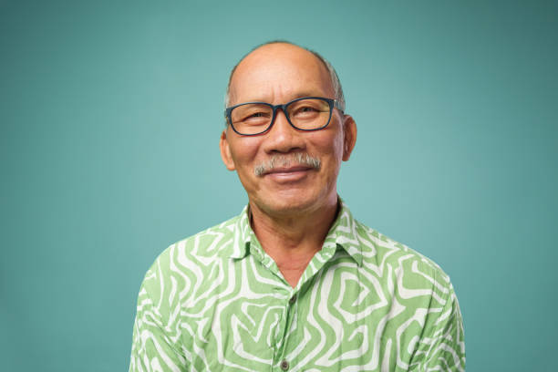
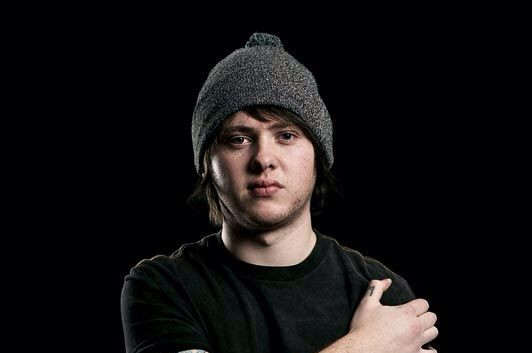
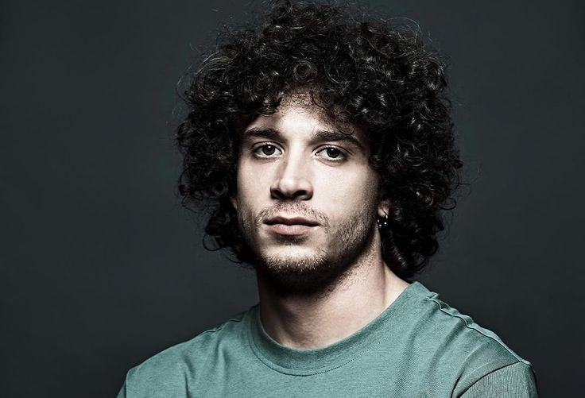
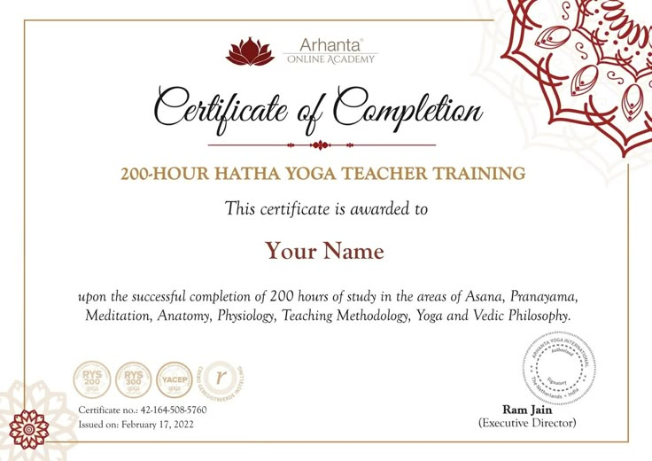
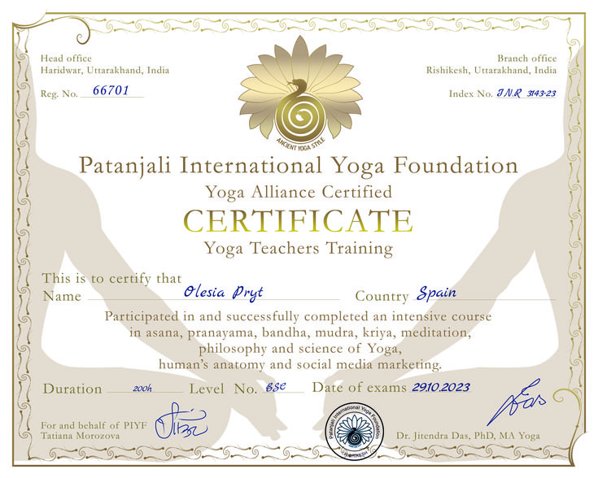
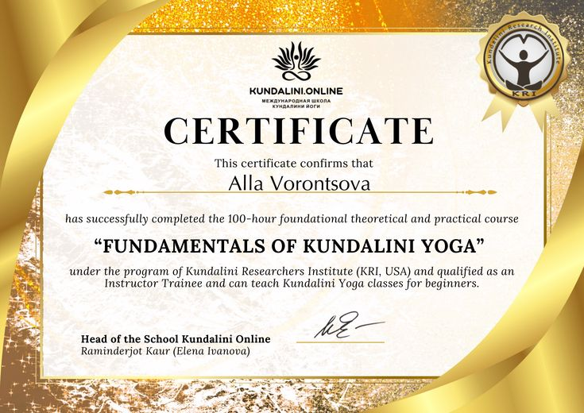

Instructorii Noștri
Profesioniști pasionați, dedicați să îți ghideze călătoria spre armonie și echilibru interior.

Ana Popescu
Specializări: Hatha Yoga, Kundalini Yoga, Pranayama
Certificări: E-RYT 500, YACEP
Experiență: 10 ani
„Yoga este călătoria către tine însuți.”
Ana crede că yoga este pentru toată lumea și că fiecare mișcare contează.

Mihai Ionescu
Specializări: Vinyasa Yoga, Power Yoga, Flow
Certificări: RYT 200, Biomecanică
Experiență: 8 ani
„Fiecare respirație este un nou început.”
Mihai își ghidează elevii să își descopere puterea interioară prin mișcare conștientă.

Andreea Marin
Specializări: Yin Yoga, Restorative Yoga, Yoga Nidra
Certificări: RYT 300, Terapie prin Yoga
Experiență: 7 ani
„Relaxarea este cheia eliberării.”
Andreea creează un spațiu sigur unde fiecare elev își poate găsi liniștea interioară.
Cristian Vasile
Specializări: Ashtanga Yoga, Power Yoga, Mysore Style
Certificări: RYT 500, Tehnici Avansate
Experiență: 12 ani
„Disciplina este puntea dintre vis și realitate.”
Cristian combină disciplina tradițională cu tehnici moderne pentru rezultate maxime.
Elena Voicu
Specializări: Meditație Ghidată, Mindfulness, Vipassana
Certificări: RYT 200, Mindfulness
Experiență: 6 ani
„Liniștea interioară este cel mai mare dar.”
Elena își invită elevii să descopere puterea prezentului prin practici simple și autentice.

Ioana Rădulescu
Specializări: Yoga pentru Copii, Family Yoga, Gentle Yoga
Certificări: RYT 200, Yoga pentru Copii
Experiență: 5 ani
„Yoga ne unește și ne vindecă.”
Ioana aduce bucuria yoga în familii, creând conexiuni autentice prin mișcare.

Alexandru Ștefan
Specializări: Iyengar Yoga, Terapie prin Yoga, Aliniere
Certificări: RYT 500, Terapie Yoga
Experiență: 9 ani
„Precizia în postură aduce claritate în minte.”
Alexandru folosește accesorii și tehnici precise pentru a adapta practica fiecărui elev.
Maria Dumitrescu
Specializări: Yoga Nidra, Restorative Yoga, Relaxare Profundă
Certificări: RYT 300, Yoga Nidra
Experiență: 8 ani
„Odihna profundă este mama vindecării.”
Maria își ghidează elevii într-o călătorie de relaxare și regenerare completă.

Andreea Dumitrescu
Specializări: Yoga Nidra, Restorative Yoga, Relaxare Profundă
Certificări: RYT 300, Yoga Nidra
Experiență: 8 ani
„Odihna profundă este mama vindecării.”
Andreea își ghidează elevii într-o călătorie de relaxare și regenerare completă.
Certificări
Toți instructorii noștri sunt certificați internațional și participă anual la workshop-uri de specializare.



„Yoga este lumina care, odată aprinsă, nu se stinge niciodată.”
„Yoga nu este despre a fi perfect, ci despre a fi prezent.”
„Nu există cale către fericire. Fericirea este calea.”